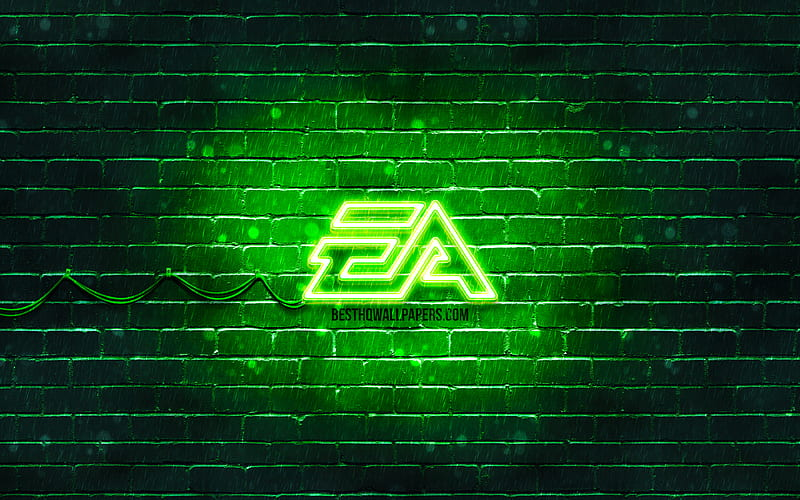

BagelTV's Twitch account was created 10BC. They carefully and slowly grafted their way to stardom through hard work and perseverance. After overcoming many hurdles and cancels, they finally hit 2k followers on Twitch. This is a great achievement and could possibly be the peak of their career.
It's only up from here!
YouTube is a very versatile platform but who knew that what it needed was BagelTV. Starring hundreds of clips, the BagelTVClips was an absolute sensation and hit almost 12 views once!
Absolutely incredble show of determination and just pure talent. We applaud you BagelTV.

Not your average gamer, BagelTV was not only a competitor, but a finalist for the eChampions League Europe. Incredible work, lots of practice supporting Liverpool and Man City.
Because, as I'm sure everyone knows, the thing about Arsenal is that they always try to walk it in..

Since BagelTV is so accomplished, they will be debuting in their first gaming convention as a creator. The date is 28th March - 1st April 2024 and the stall will be confirmed as soon as Insomnia respond to our many emails!
Any day now.....